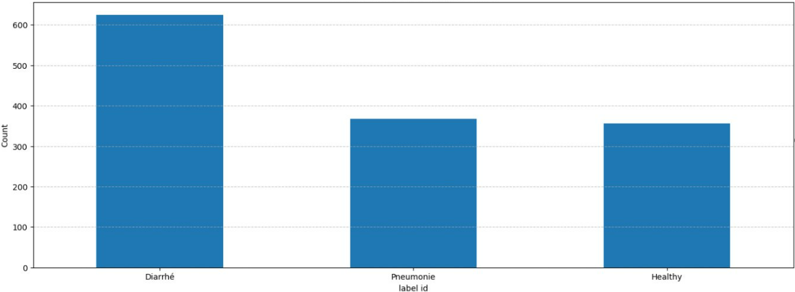
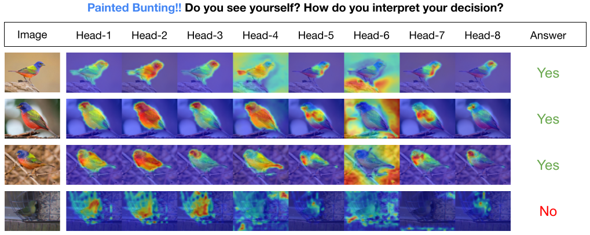
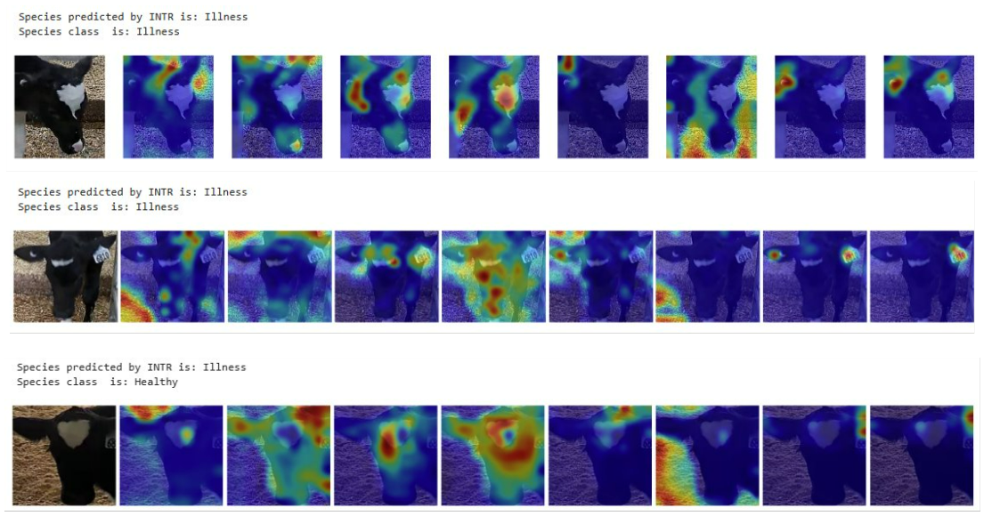
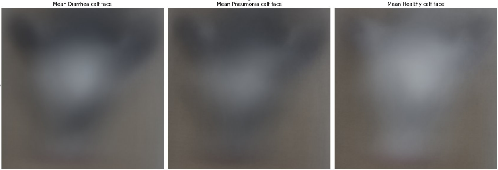

What I Learned from Calf Face 😊
Small Data, Big Dreams
Alright, let’s be real—when we started, we had a tiny data problem. We’re talking less than 200 images of calf faces (yep, calf faces!). And trust me, that’s nowhere near enough if we want to build a robust detection model. 🐮
But no worries, we had a plan! First, we took YOLOv8 and fine-tuned it with some clever data augmentation. We went from a measly 178 images to a whopping 890—thanks to a combo of GaussianBlur, MedianBlur, Sharpen, Flip, and good ol’ rotation (between 10 to 20 degrees, nothing too wild).
Now, the goal was to keep the transformations realistic. No crazy color changes or outlandish rotations that might produce data that doesn’t even exist in the real world—because that’s how you end up with a model that thinks cows fly. 🐄✈️
And guess what? After this magic data expansion, we saw a small bump in mAP50 (mean Average Precision) and other YOLO metrics. We went from 0.803 with basic data augmentation of YoloV8 to 0.891 on the mAP score after 10 epochs. 📈
Here’s a quick table showing the before and after, because data geeks love tables:
| Metric | Before | After |
|---|---|---|
| mAP50 | 0.803 | 0.891 |
| mAP50-90 | 0.503 | 0.502 |
| Precision | 0.992 | 1 |
| Recall | 0.778 | 0.769 |
Now, before anyone screams “Overfitting!”—hold up. Yes, the boost in performance might make it seem like that’s what’s happening, but we’re confident that’s not the case. Why? Because the video data we plan to use for detection closely resembles the training data. In other words, the model’s doing exactly what we need it to do: detect calves in environments that are super similar to the ones it’s been trained on. 🎯
Oh, and by the way—the metrics you see in that table? Those aren’t based on the augmented data. Nope! They’re from a subset of the original 175 images, which we held back specifically as our test set. So, the numbers here reflect real, unaltered images, giving us a more honest assessment of the model’s performance. 💪
Choosing the Right Model & Training: Where Things Get Real 🎯
Okay, so once we had the data sorted, it was time to pick the right model—and honestly, that’s where things got a little complicated. Not only did I need something that would crush the performance side of things, but I also needed to be able to explain why the model made the decisions it did. You know, in case anyone asks the big question: “Why did your model do that?” 😅
The Model Line-Up 🏆
For images, I went through a few options before landing on the right one. I tried DeepLabV3, EfficientNet, InceptionV3, and even Unet (which I ended up abandoning—long story 🫠). I also gave ViT and a LSTM+CNN combo a shot, but, well… let’s just say I didn’t get around to finishing that one. Too much on my plate!
For videos, it was another story. I experimented with TimeSformer, ViViT, and VideoMAE to handle the moving pictures. 🎥
Cracking the Model’s Decisions: Interpretability with OmnixAI 🧠
When it came to understanding why the models made specific predictions, I leaned on some awesome interpretability algorithms from OmnixAI. These tools helped me peek under the hood of the models and get a better sense of their thought process.
I used a mix of techniques like GradCAM, LIME, Score-CAM, and even SmoothGrad, GuidedBP, and LayerCAM to visualize what parts of the image the model was focusing on. Each one gave me a slightly different view of how the model was processing the data, which made interpreting results a whole lot easier (and way more fun to explain 😎).
And I also even trained INTR, a transformer-based model specifically designed for interpretability. ✨
Building a Killer Dataset Split 🧩
Next up, I had to make sure my dataset was split in a way that would allow for a solid comparison between models. Here’s how I did it:
Using the YOLO model I mentioned earlier, I went through almost 1 hour of video showing calves approaching a feeder. I grabbed the 10 seconds before each calf started feeding and extracted images where their cute little faces were visible. In the end, I had 1,349 videos and 7,687 images, representing 76 unique calves.

To keep things clean, I handpicked 68 videos where I verified that each calf was actually approaching the feeder (with no noise), and used those videos as my test set. The images from those videos? They became my image test set (283 images in total).
Two Different Training Sets? Why Not? 🤷♂️
I built two separate training sets just for fun (and science, of course):
- Full Set: This one included all the remaining images and videos, no holds barred.
- Limited Set: Here’s where things got interesting. I only used one video and two images per calf, per health status—“healthy,” “diarrhea,” or “pneumonia.” My logic? Since some images were super similar (I sampled about 30 images evenly from each 10-second video), I figured the model could easily overfit. I wanted to see how it would perform with less redundant data.
Yeah, it’s a pretty naive approach, but it sped up my work and saved some headaches. Plus, even though about 40% of the data was, well, garbage 🗑️, the rest of it more than made up for it. 💪
I should mentioned that those calf in the test set were not in the training set, so the model never saw them before. 🐄
Pro Tip: Use MLflow! 🛠️
Oh, one last thing. If you’re planning on doing so much training like this, seriously, do yourself a favor and use MLflow to track your experiments. I didn’t use it for this project (don’t ask, it was a mess, I swear! 🤦♂️), but if I had to do it all over again, MLflow would’ve saved me SO much time and effort. Lesson learned!
Results: The Good, the Bad, and the Calves 🐄
You can check out all the detailed results and model performances in the dedicated repo for this project (because sharing is caring, right? 📂). But while I didn’t get a chance to completely wrap up the work (classic researcher life 😅), there are a few important highlights that are worth mentioning.
The Curious Case of the INTR Model 🤔

So, let’s talk about the INTR model. The original paper boasted that this model could better explain its decisions, which sounded perfect for what I needed. But after fine-tuning it on my dataset? Yeah, not quite the same result. 🤷♂️

Why? Well, here’s where the data shift kicked in. The pre-trained model had been trained on images where the object of interest was neatly placed in the center of the frame (picture-perfect). My dataset? Not so much. My calves were sometimes, all over the place, doing their own thing, and not staying center-stage. 😬
The “Same Old Background” Problem 🌾

Another issue I ran into: background consistency. Since all my training data came from the same farm, the background was pretty much always the same. So, while the model learned to perform decently well on that data, it didn’t generalize well when I tested it with images from a different farm. Different farms = different environments. And as we all know, no two farms are exactly alike, right? 🏡 🐄
It’s not the model’s fault—it’s just how things are. If the goal is to have a model that works across various farms, we either need a ton more data from different environments, or maybe we should consider building farm-specific models. Unless, of course, we want to standardize every farm, which, let’s face it, isn’t going to happen. 🤷♀️
Is the Model Actually Learning the Right Things? 🤨
Here’s the tricky part: The model performed relatively well. But—big but—it could be learning patterns we don’t want it to focus on. Maybe it’s using the calf’s face color, or maybe the background is playing a bigger role in its decision-making than we’d like to admit. In short, even though the performance metrics look good on paper, I’d recommend handling them with care. 📊
Words of Wisdom from My Professor 👨🏫
My supervisor always says we shouldn’t expect miracles from these models. After all, it’s hard for even a human to just look at a calf and determine its health status purely based on appearance. Add in the fact that we’re working with limited data, and yeah—it was always going to be a challenge.
But the whole point of this project was to test, explore, and see how a deep learning approach would hold up, despite those challenges. So, while the results may not be earth-shattering, the insights we’ve gained are super valuable for refining future models. 💡
Have We Answered the Big Question? Can We Detect Calf Health Status from Images or Videos? 🤔
Short answer? Not yet. 🛑
To be honest, I think we need a better dataset to get the results we’re aiming for. There’s definitely potential—maybe we can identify new features or patterns to help detect diseases more accurately, or perhaps the model can be trained to pick up on the same cues humans use when assessing calf health. But realistically, that’s going to take a lot more work than what I’ve done so far. 🐄💻
One major thing I’ve learned is that using pre-trained models (whether they’re foundation models or not) on real-life problems takes way more effort, data, and attention to detail than I ever expected. When you watch those flashy demos where models seem to perform flawlessly, it’s easy to think, “I got this.” But in reality? The process is a bit messier, and it involves a lot more tweaking than the demo might let on. 😅
Maybe I didn’t make all the right decisions—choosing the best model, or even formulating the right hypotheses—but hey, that’s how we learn, right? If you have thoughts, feedback, or think there’s something I missed, feel free to comment and let me know. Let’s keep the conversation going and figure this out together! 🤝
And That’s a Wrap! 🎬
Until next time, keep learning, keep growing, and keep exploring the world of AI. It’s a wild ride, but hey, someone’s gotta do it! 🚀